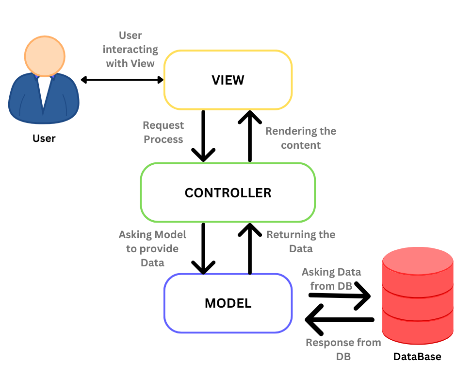
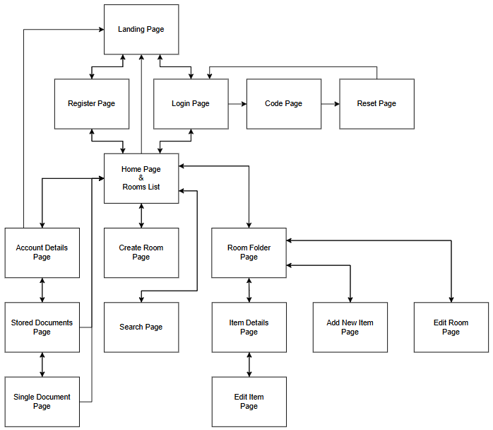
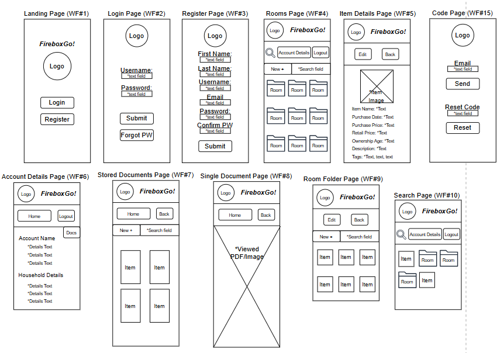
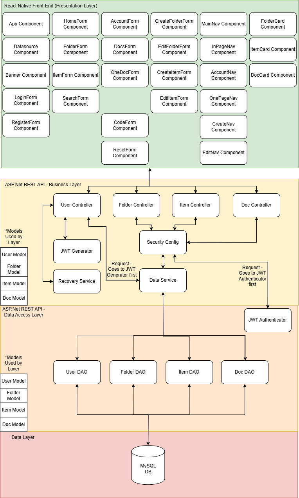
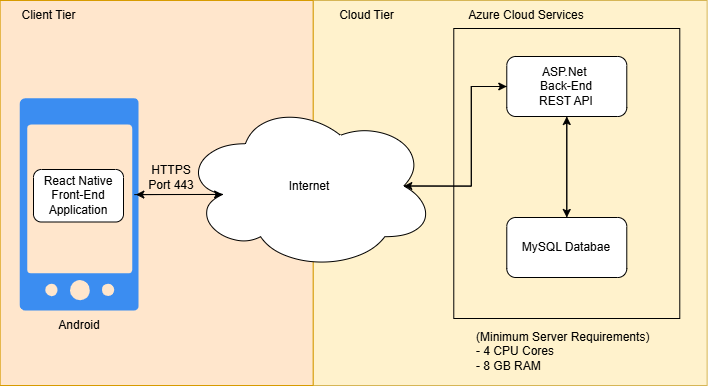

Introduction
Society is ever shifting towards a completely digitial age. Fire safety boxes provide a certain peace of minf when it comes to loosing important documents to house fires or burglaries. However, not everything can be stores inside a small box or even a large safe. Important details about physical property like furniture and electronics would be lost in an accident unless tedious and painstaking notes are taken. Enter FireboxGO!
FireboxGO is a mobile application similar in function to a fire safety box but with a much wider reach. Users can catalog every single piece of property in their household along with important PDFs and cherished images. Not only does it provide another layer of back-ups and redundancy, it allows you to store that important information about physical property that would otherwise go undocumented. There's now no need to frantically scribble down all that information in a clunky notebook. It can all be added directly to the app, stored for safe keeping alongside important documents and photos. Furthermore, it allows users to access that information whenever and wherever they may need, making FireboxGO a more versatile option than a large and cumbersome fire safety box.
Functional Requirements
- Login/Register: Users can register an account which they will use to login and store information. A user is capable of reseting their account password should they need to.
- Room Folders: Users can create folders representative of the rooms in their house. Here they can store property items. Folders can be assigned tags for management.
- Property Items: Users can create items representative of the property they own. Property items can be assigned tags for management.
- Files: Users can upload images and PDFs directly from their phone. These files are safely stored and users can download any of these files back onto their phone.
- Search: Users can search through folders, items, and files. There are type-specific searches and general search functions, along with a tag-based search.
- Account: Users can check in on the metrics and details of their account. Username and email are provided along with metrics like number of rooms, household worth, and more.
Non-Functional Requirements
- Password Hashing: User passwords are encrypted and stored in clear text to facilitate security. This was chosen to safely manage the sensitive data that is handled by the app.
Future Requirements
From here, the FireboxGO team plans to continue development. The immediate next steps are to host the back-end API and database in Azure Cloud. After that, more features will be brainstormed, planned out, and developed. Lastly in the current plan, FireboxGO will eventually be developed for iOS and added to both the Apple Store and the Google Play Store for public use.
Technologies

React Native
React Native was chosen for the front-end of FireboxGO because it allows for cross-platform development. This allows for deployment of the same application across iOS and Android devices. React Native has strong community support, rich libraries, and it well-suited overall for mobile development. React Native was initially unfamiliar to the development team. However, the team was interested in learning React Native as it was one of the top mobile development languages. Research and sandbox playtesting allowed the team to quickly become familiar with the language.

ASP.NET Core
ASP.NET Core was chosen for the back-end of FireboxGO becuase it has a modern framework meant for building robust APIs. It comes with dozens of development tools that further support it being the premier choice for a maintainable server-side application. Overall, it meshes well with the security set-up and the API design that was envisioned for FireboxGO. ASP was chosen due to the team's intense familiarity with the framework.

MySQL Databases
MySQL was chosen as the database for this project because it is a reliable and well-established relational database management system. Its structured query language and strong compatibility with ASP.NET Core made it the natural choice for managing FireboxGO's data. Additionally, MySQL's scalability made it a dependable choice as FireboxGO grows larger. MySQL was chosen due to the team's intense familiarity with the database type.

Azure Cloud Services
Azure Cloud Services has been selected for future implementation to support FireboxGO's scalability and reach. While not yet integrated, Azure offers a suite of tools for deployment and monitoring. It also has a seamless integration with ASP.NET Core and support for services like Azure SQL, App Services, and DevOps pipelines make it an ideal platform for hosting and maintaining FireboxGO as it grows.
Implementation
Software Development Lifecycle
The timeline of FireboxGO was guided by the Software Development Lifecycle (SDLC). It provided structure to the development process, from initial planning and requirements planning to implementation and deployment. This approach allowed for FireboxGO's team to aquire a clear raodmap and an organized workflow as the project progressed.
MVC Architecture
The Model-View-Controller (MVC) architecture was implemented to separate concerns and improve maintainability. The model handled the various objects that were being utilized by the back-end. The view was the React Native front-end. The controller handled data and business logic, primarily through Data-Access Objects.
Technical Approach
Below are four primary diagrams, highlighting the technical design of FireboxGO!
Sitemap
Example UI Design
Logical Solution
Physical Solution
Risks & Challenges
Risks: The team had never developed a mobile application before. So this endeavor was a large risk. However, a back-up plan was put in place to switch to a web-based application if mobile development fell through or was costing too much. This also was compounded by the team's unfamiliarity with React Native as a language. However, a Proof-of-Concept app was initially developed to prove that the team was capable of delivering a basic mobile application developed in React Native.
Challenges: The team consisted of only one member. The entiret or the project from planning to development was on them alone. However, they were able to manage their time well to meet deadlines and plan out feature production accordingly. It was done in a way that was time-effective while not being overly stressful.
Outstanding Issues
There are currently no outstanding issues with FireboxGO. Any issues encountered during future development will be added here.